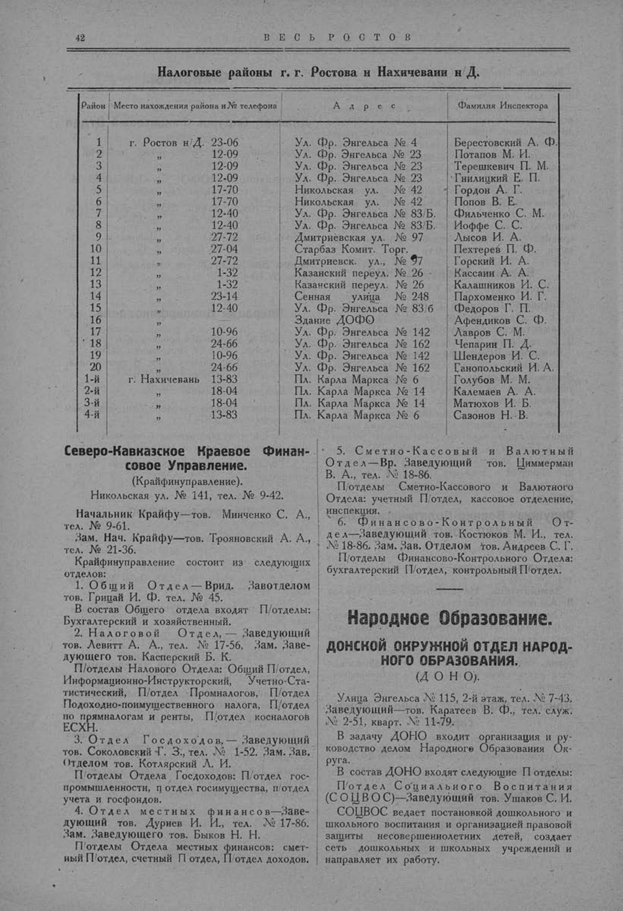

Лист источника 92
Скан

Распознанный текст
42 В Е С Ь Р О С Т О В
Налоговые районы г. г. Ростова и Нахичевани н/Д.
Район Место нахождения района и № телефона Адрес Фамилия Инспектора
1 г. Ростов н/Д. 23-06 Ул. Фр. Энгельса № 4 Берестовский А. Ф.
2 " 12-09 Ул. Фр. Энгельса № 23 Потапов М. И.
3 " 12-09 Ул. Фр. Энгельса № 23 Терешкевич П. М.
4 " 12-09 Ул. Фр. Энгельса № 23 Гнилицкий Е. П.
5 " 17-70 Никольская ул. № 42 Гордон А. Г.
6 " 17-70 Никольская ул. № 42 Попов В. Е.
7 " 12-40 Ул. Фр. Энгельса № 83/Б. Фильченко С. М.
8 " 12-40 Ул. Фр. Энгельса № 83/Б. Иоффе С. С.
9 " 27-72 Дмитриевская ул. № 97 Лысов И. А.
10 " 27-04 Старбаз Комит. Торг. Пехтерев П. Ф.
11 " 27-72 Дмитриевск. ул., № 97 Горский И. А.
12 " 1-32 Казанский переул. № 26 Кассаин А. А.
13 " 1-32 Казанский переул. № 26 Калашников И. С.
14 " 23-14 Сенная улица № 248 Пархоменко И. Г.
15 " 12-40 Ул. Фр. Энгельса № 83/б Федоров Г. П.
16 " Здание ДОФО Афендиков С. Ф.
17 " 10-96 Ул. Фр. Энгельса № 142 Лавров С. М.
18 " 24-66 Ул. Фр. Энгельса № 162 Чепарин П. Д.
19 " 10-96 Ул. Фр. Энгельса № 142 Шендеров И. С.
20 " 24-66 Ул. Фр. Энгельса № 162 Ганопольский И. А.
1-й г. Нахичевань 13-83 Пл. Карла Маркса № 6 Голубов М. М.
2-й " 18-04 Пл. Карла Маркса № 14 Калемаев А. А.
3-й " 18-04 Пл. Карла Маркса № 14 Матюхов И. Б.
4-й " 13-83 Пл. Карла Маркса № 6 Сазонов Н. В.
Северо-Кавказское Краевое Финан-
совое Управление.
(Крайфинуправление).
Никольская ул. № 141, тел. № 9-42.
Начальник Крайфу—тов. Минченко С. А.,
тел. № 9-61.
Зам. Нач. Крайфу—тов. Трояновский А. А.,
тел. № 21-36.
Крайфинуправление состоит из следующих
отделов:
1. Общий Отдел — Врид. Завотделом
тов. Грицай И. Ф. тел. № 45.
В состав Общего отдела входят П/отделы:
Бухгалтерский и хозяйственный.
2. Налоговой Отдел, — Заведующий
тов. Левитт А. А., тел. № 17-56. Зам. Заве-
дующего тов. Касперский Б. К.
П/отделы Налового Отдела: Общий П/отдел,
Информационно-Инструкторский, Учетно-Ста-
тистический, П/отдел Промналогов, П/отдел
Подоходно-поимущественного налога, П/отдел
по прямналогам и ренты, П/отдел косналогов
ЕСХН.
3. Отдел Госдоходов, — Заведующий
тов. Соколовский Г. З., тел. № 1-52. Зам. Зав.
Отделом тов. Котлярский Л. И.
П/отделы Отдела Госдоходов: П/отдел гос-
промышленности, п отдел госимущества, п/отдел
учета и госфондов.
4. Отдел местных финансов—Заве-
дующий тов. Дурнев И. И., тел. № 17-86.
Зам. Заведующего тов. Быков Н. Н.
П/отделы Отдела местных финансов: смет-
ный П/отдел, счетный П отдел, П/отдел доходов.
5. Сметно-Кассовый и Валютный
Отдел—Вр. Заведующий тов. Циммерман
В. А., тел. № 18-86.
П/отделы Сметно-Кассового и Валютного
Отдела: учетный П/отдел, кассовое отделение,
инспекция.
6. Финансово-Контрольный От-
дел—Заведующий тов. Костюков М. И., тел.
№ 18-86. Зам. Зав. Отделом тов. Андреев С. Г.
П/отделы Финансово-Контрольного Отдела:
бухгалтерский П/отдел, контрольный П/отдел.
Народное Образование.
ДОНСКОЙ ОКРУЖНОЙ ОТДЕЛ НАРОД-
НОГО ОБРАЗОВАНИЯ.
(Д О Н О).
Улица Энгельса № 115, 2-й этаж, тел. № 7-43.
Заведующий—тов. Каратеев В. Ф., тел. служ.
№ 2-51, кварт. № 11-79.
В задачу ДОНО входит организация и ру-
ководство делом Народного Образования Ок-
руга.
В состав ДОНО входят следующие П отделы:
П/отдел Социального Воспитания
(СОЦВОС)—Заведующий тов. Ушаков С. И.
СОЦВОС ведает постановкой дошкольного и
школьного воспитания и организацией правовой
защиты несовершеннолетних детей, создает
сеть дошкольных и школьных учреждений и
направляет их работу.